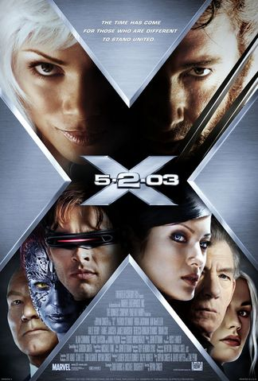

Incredibles 2

Platform: In theaters near you
Rotten Tomatoes Score: 94%
Rating: PG
Watch the trailer here
Actors: Brad Bird, Holly Hunter, Samuel L. Jackson, Craig T. Nelson
Synopsis:In this lauded Pixar animated film,
married superheroes Mr. Incredible (Craig T. Nelson) and Elastigirl
(Holly Hunter) are forced to assume mundane lives as Bob and Helen Parr
after all super-powered activities have been banned by the government.
While Mr. Incredible loves his wife and kids, he longs to return to
a life of adventure, and he gets a chance when summoned to an island
to battle an out-of-control robot. Soon, Mr. Incredible is in trouble,
and it's up to his family to save him.
Guardians of the Galaxy vol. 2

Platform: Netflix, Prime, and YouTube
Rotten Tomatoes Score: 83%
Rating: PG-13
Watch the trailer here
Actors: Chris Pratt, Zoe Saldana, Dave Bautista, Kurt Russell
Synopsis:Peter Quill and his fellow Guardians are
hired by a powerful alien race, the Sovereign, to protect their
precious batteries from invaders. When it is discovered that Rocket
has stolen the items they were sent to guard, the Sovereign dispatch
their armada to search for vengeance. As the Guardians try to escape,
the mystery of Peter's parentage is revealed.
Lord of the Rings: The Fellowship of the Ring

Platform: Hulu, YouTube, and Prime
Rotten Tomatoes Score: 91%
Rating: PG-13
Watch the trailer here
Actors: Orlando Bloom, Cate Blanchett, Elijah Wood, Ian McKellen
Synopsis:The future of civilization rests in the fate
of the One Ring, which has been lost for centuries. Powerful forces are
unrelenting in their search for it. But fate has placed it in the hands
of a young Hobbit named Frodo Baggins (Elijah Wood), who inherits the
Ring and steps into legend. A daunting task lies ahead for Frodo when
he becomes the Ringbearer - to destroy the One Ring in the fires of
Mount Doom where it was forged.
Lady Macbeth

Platform: HBO, Prime, and YouTube
Rotten Tomatoes Score: 90%
Rating: R
Watch the trailer here
Actors: Florence Pugh, Cosmo Jarvis, Naomi Ackie, Paul Hilton
Synopsis:Rural England, 1865. Katherine is stifled by her
loveless marriage to a bitter man twice her age, whose family are cold
and unforgiving. When she embarks on a passionate affair with a young
worker on her husband's estate, a force is unleashed inside her, so
powerful that she will stop at nothing to get what she wants.
Avengers: Infinity War

Platform: In theaters near you
Rotten Tomatoes Score: 83%
Rating: PG-13
Watch the trailer here
Actors: Robert Downey Jr., Chris Hemsworth, Scarlett Johansson
Synopsis:Iron Man, Thor, the Hulk and the rest of the
Avengers unite to battle their most powerful enemy yet -- the evil
Thanos. On a mission to collect all six Infinity Stones, Thanos plans
to use the artifacts to inflict his twisted will on reality. The fate
of the planet and existence itself has never been more uncertain as
everything the Avengers have fought for has led up to this moment.
The Castle of Cagliostro

Platform: Netflix
Rotten Tomatoes Score: 92%
Rating: PG
Watch the trailer here
Actors: Fujiko Mine, Koichi Zenigata, Daisuke Jigen, Arsène Lupin III
Synopsis:When master thief Lupin III (Yasuo Yamada)
discovers that the money he robbed from a casino is counterfeit, he
goes to Cagliostro, rumored to be the source of the forgery. There he
discovers a beautiful princess, Clarisse (Sumi Shimamoto), who is
being forced to marry the count so he can find the legendary treasure
of Cagliostro. In order to rescue Clarisse and foil the count, Lupin
teams up with his regular adversary, Inspector Zenigata, as well as
fellow thief Fujiko Mine.
NERVE

Platform: Hulu, Prime, and YouTube
Rotten Tomatoes Score: 66%
Rating: PG-13
Watch the trailer here
Actors: Emma Roberts, Dave Franco, Miles Heizer, Emily Meade
Synopsis:Industrious high school senior Vee Delmonico
(Emma Roberts) is tired of living life on the sidelines. Pressured by
her friends, Vee decides to join Nerve, a popular online game that
challenges players to accept a series of dares. It's not long before
the adrenaline-fueled competition requires her to perform increasingly
dangerous stunts. When Nerve begins to take a sinister turn, Vee finds
herself in a high-stakes finale that will ultimately determine her
entire future.
X2

Platform: HBO, Prime, and YouTube
Rotten Tomatoes Score: 85%
Rating: PG-13
Watch the trailer here
Actors: Hugh Jackman, Patrick Stewart, Halle Berry, Ian McKellen
Synopsis:Stryker (Brian Cox), a villianous former
Army commander, holds the key to Wolverine's (Hugh Jackman) past and
the future of the X-Men. This threat re-ignites the call for a mutant
registration act. Stryker starts a full-out assault on Professor
Xavier's (Patrick Stewart) mansion and school. After escaping his
plastic cell, Magneto (Ian McKellen) proposes a partnership with
Xavier and the X-Men to combat this new formidable enemy they both
have in common.